Flop Incest Nazis
Why the visual representation of neo-Nazism in X-Men’s Fenris succeeds
In this essay
Popular fictional media representations of neo-Nazism tend to fall into two opposing modes: serious portrayals that aim to faithfully reproduce its aesthetics and rhetoric (American History X, Romper Stomper), and satirical depictions that emphasize the absurdity of neo-Nazi beliefs and practices (The Producers, Wolfenstein: The New Colossus). The legacy of these depictions is primarily shaped by their visual components: because images are processed more rapidly and remembered more readily than text, the aesthetic framing of extremist figures—bodies, symbols, styles—bypasses and precedes higher reasoning, conditioning the audience’s ideological interpretation (Potter 307; Paivio). As a result, the visual dimension of representation becomes the central locus where neo-Nazi ideology can either gain affective traction or be critically disrupted. Together, these modes produce two recurring risks: repeated exposure normalizes neo-Nazi imagery, while stylized or exaggerated portrayals can be co-opted and transformed into mascots by the very groups they seek to denounce. In contrast, the X-Men comics offer an alternative representation through the recurring opposite-sex twins Andrea and Andreas von Strucker that form the supervillain duo Fenris. Their visual portrayal positions them as the only neo-Nazi characters in X-Men's roster of dozens of villains consistently played for comedy. Each appearance reiterates their lethal threat to everyday civilians while characterizing them as ultimately incompetent villains who embody the logical extreme of white supremacist eugenics: twin incest.
This paper argues that Fenris’s effectiveness as a representation of neo-Nazism derives from a specific visual architecture that neither purely serious nor purely satirical depictions achieve. By making incest structurally inseparable from their Aryan aesthetic, the comics deploy humor as a mechanism that transforms the iconography of white supremacy into an object of disgust, disrupting the affective pathways through which extremist imagery typically gains cultural traction and producing a representation that is visually present without being visually appealing. First, I examine how serious portrayals and satirical depictions contribute to the normalization and elevation of neo-Nazi figures in popular culture. I then show how Fenris’s visual depiction in over forty years of appearances uses incest as a comedic angle to strip fascist ideology of narrative and aesthetic power. Next, I examine how their pattern of defeat is structured to visually convey that fascism is both dangerous and defeatable, encoded through who are victimized by Fenris and who triumphs against them. Finally, I examine the visual architecture’s susceptibility to co-optation in comics discourse—and how, as the fan reception of neo-Nazi X-Men character Quentin Quire shows, the separability of comedic visuals from ideology can cause even well-intentioned reception to undercut anti-fascist messaging.
Mascotism and Normalization in Historical Popular Media Portrayals of Nazism
As Nazism in the World War II era relied on spectacle and intimidation, satirical propaganda was able to undermine fascist authority by exposing its absurdity (Milford 624). Popular media, such as Charlie Chaplin’s silent film The Great Dictator and Marvel’s Captain America comics, visually treated Nazis as farcical objects to ridicule rather than fear (Vance 250; Appendix A). Because Nazism depended on a carefully cultivated image of dominance and aesthetic coherence to sustain internal allegiance and project power outward, this ridicule proved effective in destabilizing the aura of authority that upheld its ideological appeal.
In contrast, satirical portrayals of neo-Nazism—the far-right political movement that seeks to revive elements of Nazi ideology (i.e., Hitlerism, white “Aryan” racial supremacy, antisemitism) after the fall of the regime in 1945—do not undermine its legitimacy. The function of satire differs between Nazism and neo-Nazism, as the latter no longer occupies the same centralized and dominant political position but persists as a recurring cultural presence, including in subcultures such as Nazi punk and skinhead culture. Early anti-neo-Nazi satire established a pattern of codifying extremist ideology into exaggerated comedic imagery (Fermaglich). Mel Brooks’s The Producers, a film that explicitly criticizes both Nazis and neo-Nazism, encourages audiences to treat the neo-Nazi Franz Liebkind as a lovable eccentric rather than a committed white supremacist. Because Liebkind is visually farcical—dressed in dingy Nazi regalia and chewing the scenery—the audience laughs even as he forces the Jewish protagonists to wear the swastika in public and attempts to murder them for insulting the Führer (Kashner).
On the other hand, serious portrayals of neo-Nazism, including the films American History X and Romper Stomper, frame neo-Nazi figures through stylized imagery—physical strength, cinematic intensity—that grants them aesthetic authority within the narrative (Grau; Mahar 92). In American History X, neo-Nazi skinhead Derek Vinyard’s swastika-tattooed body is depicted using stark black-and-white cinematography and low angles to make him appear larger than life, producing a form of “cinematic seduction” that glamorizes Vinyard (Grau; Righter). In fact, despite the anti-neo-Nazi message of the film, alt-right audiences have interpreted American History X as endorsing their worldview, citing its “fair” representation and elevating Vinyard as an aspirational mascot (Fraiman). Twenty years after the film's premiere, three right-wing extremists killed 16-year-old Marinus Schöberl in a recreation of the curb stomp scene (Righter; “German Teenager Murdered Because He Looked Like a Jew”).
Less scholarly attention has been paid to how the visual structure of these depictions increases fascism’s cultural transmissibility. Psychologists have shown that repeated exposure to extreme imagery leads to habituation, diminishing emotional response and reducing its capacity to shock or repel viewers (Rankin et al.), while the mere exposure effect—repeated exposure alone increases preference—further desensitizes responses to highly charged symbols (Zajonc). At the same time, scholars of fascist ideology note that such movements recruit primarily through cultural and aesthetic appeal rather than explicit ideological argument (Mosse). Taken together, these insights suggest that media representations of neo-Nazism, even when intended as critique, may inadvertently aid its recruitment by normalizing and circulating its imagery. This dynamic is amplified in contemporary popular media, where neo-Nazi figures appear with astonishing frequency across genres and formats: animated comedies (Family Guy, South Park, American Dad!), sitcoms (It’s Always Sunny in Philadelphia, Peep Show), and films (Captain America: The Winter Soldier, Green Room, Indiana Jones and the Dial of Destiny) (“Jeremy Makes It”; “The Gang Finds a Dead Guy”; “Pop-Pop: The Final Solution”).
Fenris, Incest, and Camp
Fenris’s most distinctive mechanism of destabilization lies in their aesthetic and sexual construction, which transforms potential sources of admiration into immediate sources of discomfort. Visually, Fenris draws directly from fascist ideals of Aryan beauty—tall, athletic, blonde—and their introductory panels consistently position them in sexually suggestive poses. However, these same images evoke disgust through an unavoidable undercurrent of sadomasochistic incest. In Uncanny X-Men #200, their supervillain debut, Andrea is portrayed as a skinny-yet-busty blonde in a skimpy bikini—and the dominatrix to her submissive twin brother (Appendix K). The intertwinement of sexual deviancy and villainy is reinforced through their costuming. Andrea’s main costume incorporates sashes that appear “aggressive and severe,” whereas Andreas is rendered as “visibly submissive,” bound in a “bondage-like” strap (Goldsmith, “Andrea & Andreas von Strucker” 1:02:16; Appendix L); at a black tie dinner, Andrea carries a riding crop while Andreas is dressed entirely in red leather bondage gear (Gage; Appendix B). Their incestuous relationship is also tied to their power: “sympathetic bioblasting,” generating destructive disintegration beams when in physical contact (Christiansen). As Pulitzer Prize-winning national security journalist Spencer Ackerman posits, this dependence also reflects the limited power of individual neo-Nazis (Goldsmith, “Andrea & Andreas von Strucker” 1:08:49). Thus, each supervillainous action doubles as a visual reminder of the fusion between neo-Nazi ideology and sexual pathology (Appendix E).
Importantly, their neo-Nazism and incest are not presented with a bait-and-switch: Fenris are never introduced as merely attractive villains before a later reveal, as these traits are explicit from the outset and persist throughout their depiction. Rather than functioning as separate characteristics, their incest is framed as a direct extension of their neo-Nazi ideology. This reframes eugenic “purity” as pathological self-containment, collapsing the aspirational logic of white supremacy into a closed, degenerative loop. The visual dynamic’s shock factor is intensified by the constraints of the Comics Code Authority. Being siblings, Fenris are permitted a level of physical intimacy that exceeds what is allowed for explicitly sexual relationships, a contrast made sharper within X-Men, which houses the most queer relationships in Marvel (those were explicitly forbidden from depiction). While canonical couples were limited to kisses and chaste embraces, a naked Andrea can ask her brother to brush her hair after proclaiming that "no one understands the true nature of our love. The purity. The intensity" (Gage; Appendix C). This disparity heightens the sense of vulgarity, preventing their intimacy from being normalized and instead rendering it persistently shocking and resistant to reader self-identification.
The choice of using incest has two benefits. First, incest is a near-universal taboo (Goldsmith, “Andrea & Andreas von Strucker” 20:31), with sibling incest evoking a visceral disgust that is believed to be evolutionarily hard-wired (Antfolk and Godenhjelm). As Fenris's twin incest is the logical extreme of Aryan eugenic ideology—an obsessive pursuit of purity that collapses into narcissistic autoeroticism—Fenris's twin incest allows these comics to incorporate more of the co-optable neo-Nazi imagery while simultaneously undermining it. Viewers who might be drawn to these figures through aesthetic appeal or ideological alignment instead encounter an immediate disruption, as the same features that invite attraction are inseparable from a taboo that produces repulsion. This repulsion is especially strong in Western culture (Schulz et al.), the exact demographic most likely to embrace white nationalist imagery. The juxtaposition prevents aesthetic or ideological identification from stabilizing, transforming attraction into disgust; the lack of a bait-and-switch prevents neo-Nazi groups from co-opting their imagery, strongly reframing neo-Nazism itself as pathological rather than aspirational.
Second, the incest pushes this aesthetic into absurdity, making them, as X-Men and media scholar Connor Goldsmith notes, “the funniest possible concept for a supervillain team: camp, highly stylized, aestheticized, fraternal twin Nazis who fuck each other” (Goldsmith, “Andrea & Andreas von Strucker” 5:50). Fenris's humor depends on their total lack of self-awareness: they embrace their ideology and their sexually-deviant relationship shamelessly, even as other characters—including serious neo-Nazi X-Men villains—react with disgust (Nicieza, X-Force #32; Nicieza, Nomad #4; Appendix M). Even when framed as threatening, the exaggerated visuals undercut any real gravitas. The one exception—when the teenager Morph shapeshifts into the twins and faces their predatory sexual desire for one another—is still drawn in a way that emphasizes the absurdity of their relationship (Strain #7). In this appearance, as in Vinyard’s portrayal, the work portrays the neo-Nazis with low angling; however, the artist uses this angle to visually distort their faces, making their over-zealous embraces look ridiculous (Appendix E).
Fenris's Defeatability and the Threat of Fascism
Because Fenris are always stripped of aesthetic appeal, the comics can direct attention to a second destabilizing mechanism: their incompetence as supervillains. Fenris’s core premise is summarized by Ackerman as "they fuck each other constantly, they're fucking Nazis, … [and] they are also awful supervillains. Nearly every single issue involving Fenris involves them losing… often within pages… sometimes to children” (Goldsmith, “Andrea & Andreas von Strucker” 6:52). Memorably, this includes at the sticks of a non-powered girl’s boarding school's hockey team (Claremont, Excalibur #33). Furthermore, each defeat is shown visually as abrupt, comical, and total. Fenris's loss record is unusual in Western comic books, which typically grant even minor villains enough competence to sustain narrative tension across issues to build suspense for the next month's comic; this is an especially egregious record as X-Men arcs, editorially dictated to represent a perpetually-oppressed minority culture, most commonly start and end with a loss or pyrrhic victory, often due to a serious neo-Nazi character. Even in Uncanny X-Men #260—the rare instance in which they are not explicitly defeated by the issue’s end—the twins hilariously proclaim, “We are Struckers, we do not miss” as they disintegrate a plane—and completely failing to kill their targets, the X-Men Banshee and Forge, by overlooking the fact that Banshee’s power is sonic-induced flight, who are shown lying safely in a park the next panel (Claremont). Thus, Fenris are consistently denied narrative competence, preventing fascism from reasserting itself through displays of victory.
What Ackerman fails to note is the pattern of who defeats Fenris and who is threatened by Fenris. Their repeated defeats are systematically structured so that those who defeat Fenris are precisely the individuals most targeted by neo-Nazi ideology. The franchise’s three most prominent reader stand-ins—the Jewish Kitty Pryde, the Chinese-American Jubilee, and the Cheyenne Dani Moonstar—independently bring Fenris to a visually humiliating defeat (Claremont, Excalibur #34; Strain #7; Nicieza, X-Force #32, Appendix D). Because each belongs to a group historically targeted by white supremacist ideology, these confrontations symbolically invalidate Fenris’s racial hierarchy. Simultaneously, all three carry queer text or subtext: Kitty is bisexual, while Jubilee and Dani are often read as queer-coded. The contrast between Fenris’s incest and the protagonists’ queerness further inverts fascist constructions of “sexual degeneracy.” Where Nazism pathologized queer identity as socially corrosive, these encounters reverse the charge: the incestuous neo-Nazis are grotesque, while the queer heroes dominate them. These characters, along with the hockey team, also function as points of identification within the narrative. By positioning those most targeted by neo-Nazi ideology as the ones who repeatedly defeat Fenris, the comics align the reader with figures capable of resisting fascism. Overall, rather than presenting neo-Nazism as overwhelming or inevitable, this visual structure suggests that the reader can defeat it, too.
However, while Fenris fails to affect the protagonists, they threaten the lives of everyday citizens of Marvel comics. Their debut as Fenris in Uncanny X-Men #200 further marks them responsible for mass civilian casualties (Claremont). Even when they failed to kill Banshee and Forge, they still murder a plane full of innocent people. Together, this forms the dynamic of Fenris's threat: Fenris are always dangerous to civilians and the less powerful individuals our heroes try to protect, but they are neither invincible nor mythic and are easily defeatable by any of the characters the reader identifies with most strongly. This pattern, unlike serious portrayals that risk granting neo-Nazism aesthetic or narrative power, preserves the reality of fascist violence, reinforcing the message that fascism is both dangerous and consistently defeatable.
Co-optation, Circulation, and the Limits of Visual Defanging
Where scholars of media circulation note the ease with which images detach from context (Highfield and Leaver), Fenris suggests that not all visual forms are equally vulnerable to that detachment. Unlike other fictional figures, such as Liebkind, that rely on overt symbols (e.g., swastikas), Fenris signal their ideology primarily through dialogue, with minimal reliance on visually co-optable markers. The practical effect is twofold: the comics avoid reproducing the most easily transmissible visual symbols of neo-Nazism, and any attempt to co-opt Fenris requires engagement with the self-satirizing rhetoric. Similarly, no panel of Fenris can circulate without engaging with the taboo that undercuts its sexual appeal, even if the dialogue is removed. This visual constraint is especially important in comics, where, between writing and art, the latter circulates more easily in fan practices—panels are clipped, shared, and reproduced out of context, often with dialogue removed or altered (Jenkins; Appendix J), so representations that rely on nuanced narrative framing are particularly vulnerable to co-optation.
This vulnerability becomes most visible when comparing the reception of Fenris with that of fellow X-Men character Quentin Quire. Goldsmith noted that Fenris are effectively the only neo-Nazi characters in Marvel consistently played for humor rather than intimidation (“Quentin Quire” 55:16)—the exception is Quire, whose visual humor has allowed neo-Nazi-coded elements to be reabsorbed into fan culture as objects of affection. Quire was introduced in Morrison's New X-Men #135 as a serious, Columbine-inspired figure (Labarre 197)—a skinhead-esque teenager who incites the lethal riot in the famous Riot at Xavier's storyline. His modern reception as a fan-favorite comedic character lies in his repeated gag of wearing T-shirts with meta, deeply political X-Men jokes: they reference the Genoshan genocide, mutant supremacist slogans, and reclaimed slurs such as “Mutie” (Hickman; Morrison #115; Appendices F–I). Unlike Fenris, however, Quire’s humor is visually separable from his ideological origins. Viral posts of these shirts on Tumblr and Reddit circulate without the context of the riot, leading new readers to encounter Quentin primarily through his humor and fan reception (Goldsmith, “Quentin Quire” 31:53). As a result, the character becomes effectively defanged: elements of a politically charged narrative are transformed into objects of aesthetic and fan-driven attachment. This process occurred without malicious intent on the fans’ part, showing how small changes in visual presentation can affect downstream reception. In contrast, at no point in Fenris’s forty-two-year publication history (compared to Quire’s twenty-four) have fans embraced them. Thus, when aesthetic appeal is detached from ideological content, normalization becomes possible.
Conclusion
Fenris’s forty-two-year run demonstrates that the visual architecture of representation is a primary component in determining whether fascist imagery can be stabilized, circulated, and admired, and determines whether popular media reproduces the cultural conditions that sustain neo-Nazism or disrupt them. This explains why works like Riot at Xavier's, The Producers, and American History X—well-researched and well-written, widely acclaimed and widely distributed—have had their message diluted or even co-opted by the very groups they set out to critique. Fenris shows that fascist visual representation should not separate what makes it legible from what makes it repulsive. Without it, there is nothing left to admire, only something to reject.
Illustrated appendices Open / close
Appendix A: Comical imagery of Hitler in popular media before the end of World War II. The first two are before the United States joined the war.
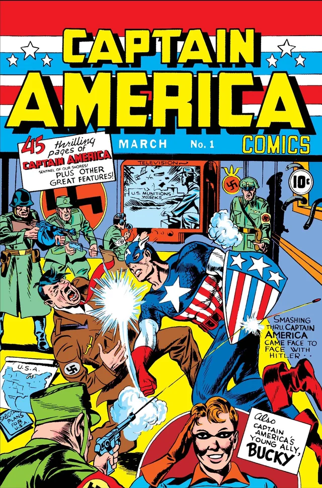
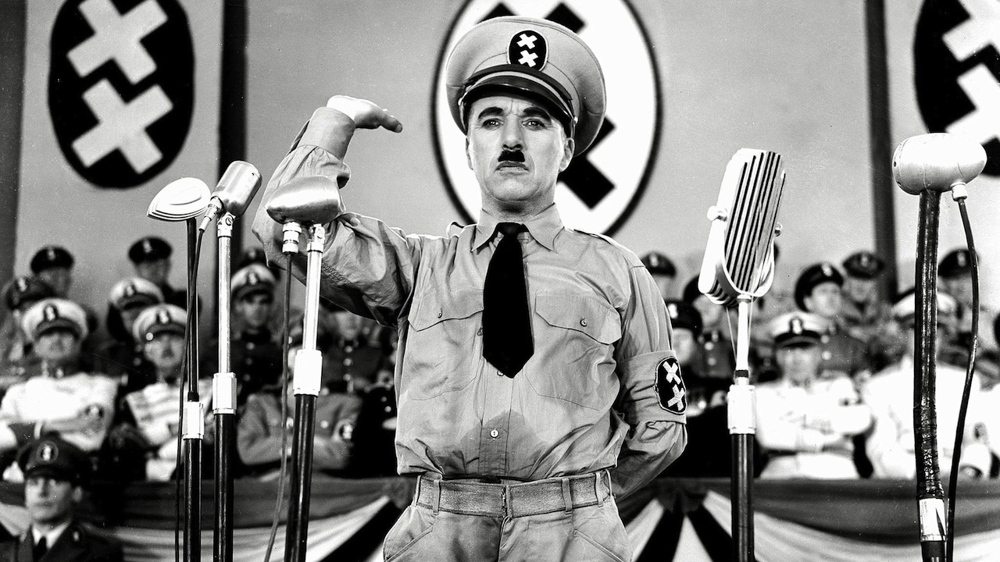
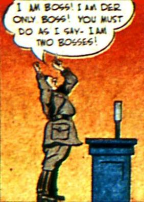
SOURCES: “Captain America.” Captain America Comics, #1. Timely Comics, 1941; The Great Dictator. United Artists, 1940; “The Case of the Hollow Men.” Mystic Comics, vol. 1, no. 9, Marvel Comics, 1942.
Appendix B: Fenris arrive at a black tie dinner party in bondage gear. Notably, the “Ragin’ Cajun” thief Gambit (second panel, middle), is uncharacteristically wearing formal clothes.
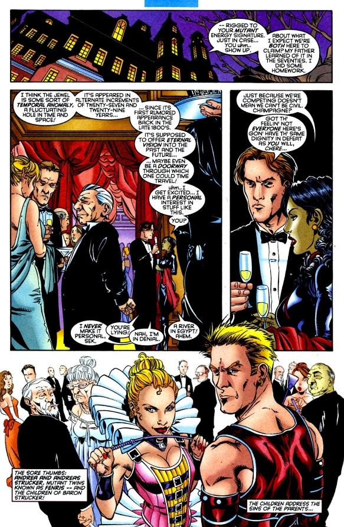
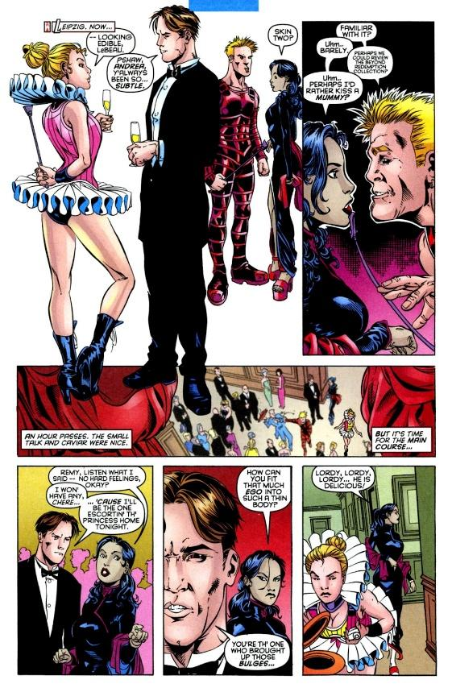
SOURCE: "Running the Asylum (Part 1).” Thunderbolts #122. Marvel Comics, 2008.
Appendix C: A naked Andrea asks Andreas to brush her hair.
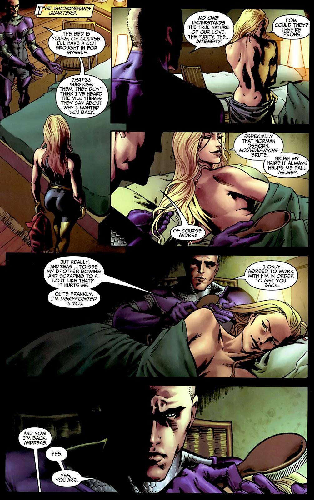
SOURCE: "With a Roll of the Dice (Child's Play, Pt. 1).” X-Force #32. Marvel Comics, 1994.
Appendix D: A typical example of one of Fenris's flops: Fenris poses after attempting to kill mutant children. After the pageflip, they are immediately defeated by Cheyenne teenager Dani Moonstar.
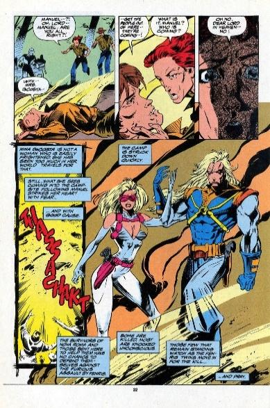
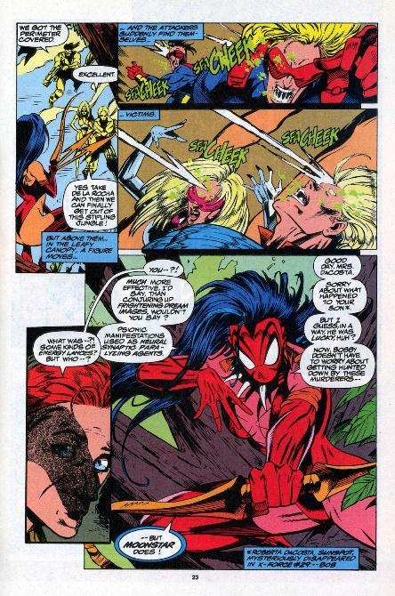
SOURCE: “With a Roll of the Dice (Child's Play, Pt. 1).” X-Force #32. Marvel Comics, 1994.
Appendix E: Morph, a gay teenage shapeshifter, shifts into Andrea (panel 1) and Andreas (panel 2), but is alarmed by Andreas’s advances towards his “sister” and Andrea’s deduction of his false identity as Morph “lacks [Andreas’s] musk.” Ugh. Here, the incestuous relationship is treated as horrific but also distinctly comedic.
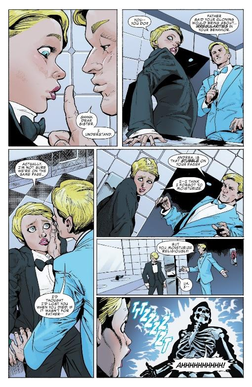
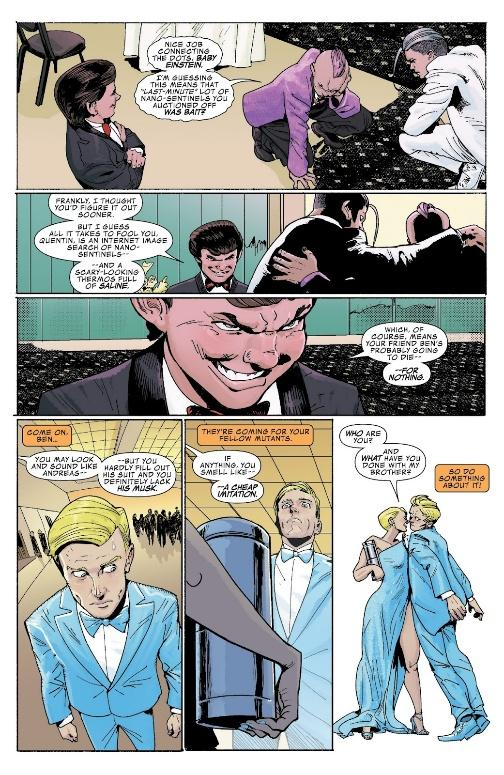
SOURCE: “Undercover And On The Run!” Generation X, vol. 2, #7. Marvel Comics, 2017.
Appendix F: Quentin Quire's t-shirts related to the fictional country Genosha, where Magneto overthrew the mutant-enslaving human government, and where the largest genocide of mutants occurred—16.5 million out of the global population of 17.6 million were murdered by the mutant-hunting robots Sentinels (Hickman; Morrison # 115).
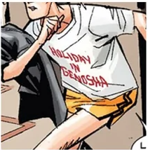
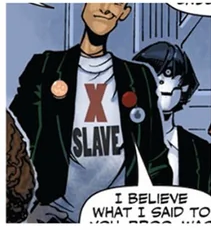
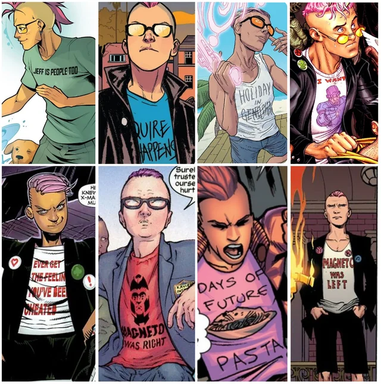
SOURCES: Wolverine and the X-Men, vol. 1, #2 Marvel Comics, 2004; Wolverine and the X-Men, vol. 1, #25. Marvel Comics, 2013; Wolverine and the X-Men, vol. 1, #2 Marvel Comics, 2004.
Appendix G: Quentin Quire's t-shirts related to the Dark Phoenix, the corrupted cosmic force most famous for genociding the peaceful D'bari civilization (Claremont #135).
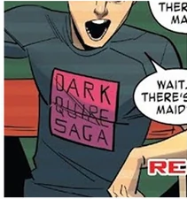
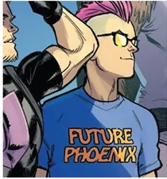
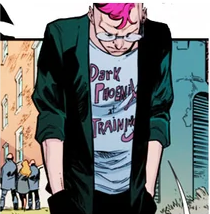
SOURCES: All-New X-Men, vol. 1, #3. Marvel Comics, 2013; “Avengers vs. X-Men Tie-In.” Wolverine and the X-Men, vol. 1, #14. Marvel Comics, 2012; Wolverine and the X-Men, vol. 1, #2 Marvel Comics, 2004.
Appendix H: Quentin Quire's original "Magneto was Right" and Omega Gang t-shirts.
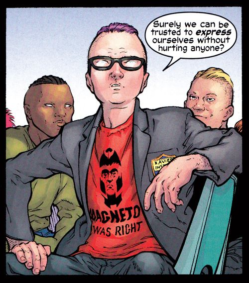
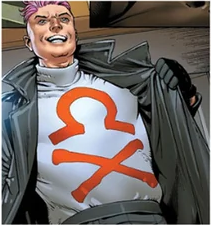
SOURCES: “Teaching Children About Fractals.” New X-Men, vol. 1, #135. Marvel Comics, 2003; “X-Men: Schism.” X-Men: Schism, #1. Marvel Comics, 2011.
Appendix I: Quentin Quire's t-shirts related to mutant supremacy. "Mutie" is the predominant anti-mutant slur.
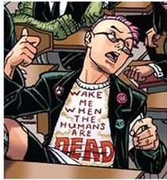
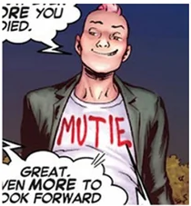
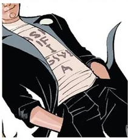
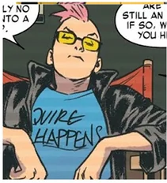
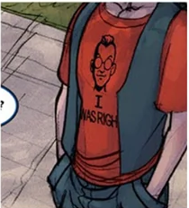
SOURCES: Wolverine and the X-Men, vol. 1, #9. Marvel Comics, 2012; Wolverine and the X-Men, vol. 1, #9. Marvel Comics, 2012; Wolverine and the X-Men, vol. 1, #4. Marvel Comics, 2012; Wolverine and the X-Men, vol. 1, #20. Marvel Comics, 2013; Wolverine and the X-Men, vol. 1, #18. Marvel Comics, 2013; Wolverine and the X-Men, vol. 1, #6. Marvel Comics, 2012.
Appendix J: Famous comic panel manipulations (left), compared to their originals (right). Despite all three panels coming from famous comics, their manipulations are significantly more well-known, with most comic fans not realizing the two bookends are non-canonical (Ewing, “Redefining Loki”). By the way, Agent of Asgard was the first comic I read; I pulled close to an all-nighter to read it. Ewing’s my favorite comic writer—he writes an absolutely amazing Magneto and Storm.
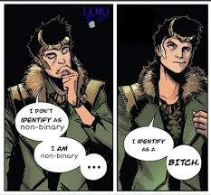
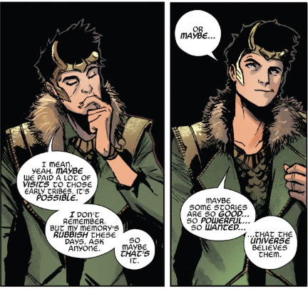
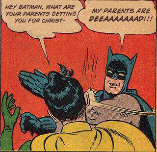
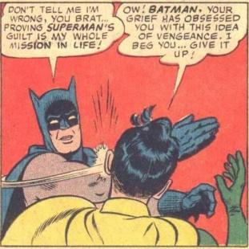
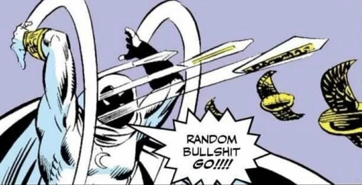
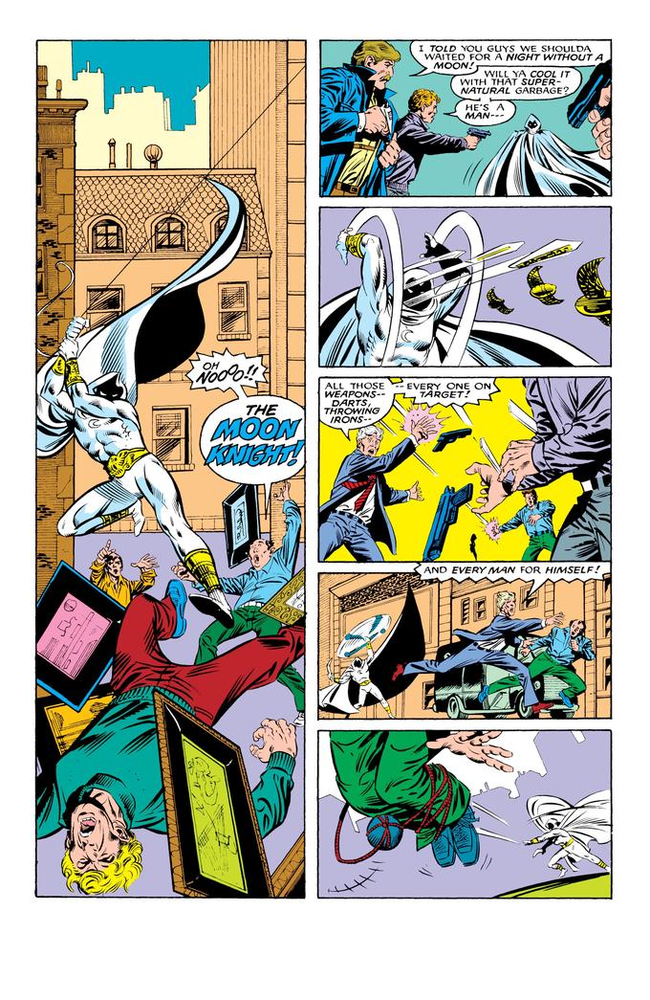
SOURCE: u/[deleted]. “My True Identity Is a Bitch.” Reddit, 2019, https://www.reddit.com/r/ennnnnnnnnnnnbbbbbby/comments/d4zycd/my_true_identity_is_a_bitch/; “The Finale.” Loki: Agent of Asgard, #17. Marvel Comics, 2015; “Batman Slapping Robin.” Know Your Meme, https://knowyourmeme.com/memes/my-parents-are-dead-batman-slapping-robin; “The Clash of Cape and Cowl.” World’s Finest Comics, #153. DC Comics, 1965; “West Coast Avengers.” West Coast Avengers, vol. 2, #21. Marvel Comics, 1987. “Random Bullshit Go!!!!”; Know Your Meme, https://knowyourmeme.com/memes/random-bullshit-go.
Appendix K: Since their first introduction, Andrea is heavily implied to be the dominatrix in this relationship.
SOURCE: “The Trial of Magneto.” Uncanny X-Men, #200. Marvel Comics, 1985.
Appendix L: Fenris's debut.
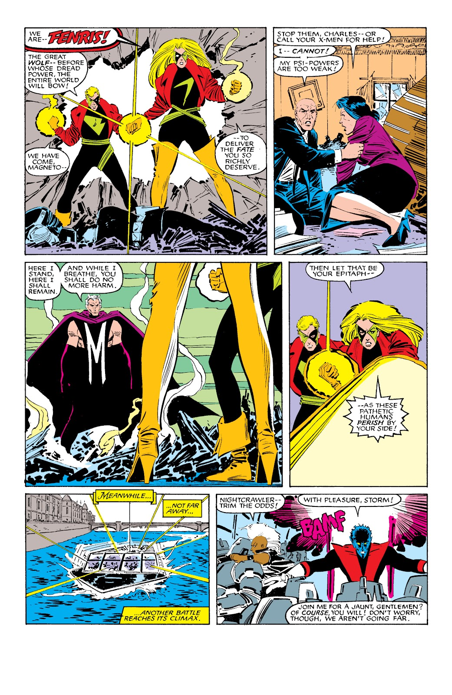
SOURCE: “The Trial of Magneto.” Uncanny X-Men, #200. Marvel Comics, 1985.
Appendix M: As Ackerman describes it, "Shitheads like Shinobi Shaw [rapist], pieces of shit like Graydon Creed [led an anti-mutant hate group, committed genocide against mutants], and Fabian Cortez—Fabian Cortez! They're all like, oh, no, I'm not Fenris" (Goldsmith, "Andrea & Andreas von Strucker" 1:44:00).
Works cited
Aaron, Jason, writer, Carlos Pacheco, penciler. “X-Men: Schism.” X-Men: Schism, #1. Marvel Comics, 2011.
Aaron, Jason, writer, Chris Bachalo, penciler. “Wolverine and the X-Men.” Wolverine and the X-Men, vol. 1, #2. Marvel Comics, 2011.
Aaron, Jason, writer, Nick Bradshaw, penciler. “Hellfire Saga, Part 1.” Wolverine and the X-Men, vol. 1, #4. Marvel Comics, 2012.
Aaron, Jason, writer, Nick Bradshaw, penciler. “Hellfire Saga, Part 3.” Wolverine and the X-Men, vol. 1, #6. Marvel Comics, 2012.
Aaron, Jason, writer, Nick Bradshaw, penciler. “Hellfire Saga, Part 6.” Wolverine and the X-Men, vol. 1, #9. Marvel Comics, 2012.
Aaron, Jason, writer, Chris Bachalo, penciler. “Avengers vs. X-Men Tie-In.” Wolverine and the X-Men, vol. 1, #14. Marvel Comics, 2012.
Aaron, Jason, writer, Ramon Perez, penciler. Wolverine and the X-Men, vol. 1, #18. Marvel Comics, 2013.
Aaron, Jason, writer, Nick Bradshaw, penciler. Wolverine and the X-Men, vol. 1, #20. Marvel Comics, 2013.
Aaron, Jason, writer, Nick Bradshaw, penciler. Wolverine and the X-Men, vol. 1, #25. Marvel Comics, 2013.
American History X. Directed by Tony Kaye, New Line Cinema, 1998.
Antfolk, Jan, and Hasse Walum Godenhjelm. “Westermarck Effect.” Encyclopedia of Evolutionary Psychological Science, edited by Todd K. Shackelford and Viviana A. Weekes-Shackelford, Springer, 2021. https://doi.org/10.1007/978-3-319-19650-3_215.
“Batman Slapping Robin.” Know Your Meme, Literally Media, https://knowyourmeme.com/memes/my-parents-are-dead-batman-slapping-robin.
Bendis, Brian Michael, writer, Stuart Immonen, penciler. “Yesterday’s X-Men.” All-New X-Men, vol. 1, #3. Marvel Comics, 2013.
Burgos, Carl. “The Case of the Hollow Men.” Mystic Comics, vol. 1, no. 9, Marvel Comics, 1942.
Chaplin, Charles, director and performer. The Great Dictator. United Artists, 1940.
Christiansen, Jeff, et al., writers. X-Men: Phoenix Force Handbook, vol. 1, no. 1, Marvel Comics, Sept. 2010.
Claremont, Chris, writer, John Byrne, penciler. “Dark Phoenix.” Uncanny X-Men, #135. Marvel Comics, 1980.
Claremont, Chris, writer, and John Romita Jr., penciler. “The Trial of Magneto!” Uncanny X-Men. No. #200, Marvel Comics, 1985.
Claremont, Chris, writer, and Mark Silvestri, penciler. “Star 90.” Uncanny X-Men. No. #260, Marvel Comics, 1990.
Claremont, Chris, writer, and Ron Wagner, penciler. “Cat on a Hot Tin Roof.” Excalibur. No. #33, Marvel Comics, 1990.
Claremont, Chris, writer, and Ron Wagner, penciler. “School Spirit.” Excalibur. No. #34, Marvel Comics, 1990.
Ewing, Al. “Al Ewing on Redefining Loki, from ‘Agent of Asgard’ to ‘Immortal Thor.” Interview by Meagan Damore. Marvel.com, 1 Dec. 2023, https://www.marvel.com/articles/comics/al-ewing-loki-agent-of-asgard-immortal-thor-interview.
Englehart, Steve, writer, Al Milgrom, penciler. “West Coast Avengers.” West Coast Avengers, vol. 2, #21. Marvel Comics, 1987.
Ewing, Al, writer, Lee Garbett, penciler. “The Finale.” Loki: Agent of Asgard, #17. Marvel Comics, 2015.
Fermaglich, Kirsten. “Mel Brooks’ The Producers: Tracing American Jewish Culture Through Comedy, 1967–2007.” American Studies, vol. 48, no. 4, 2007, pp. 59–87. JSTOR, http://www.jstor.org/stable/40644106.
Fraiman, Jordana. “The ‘Alt-Right’s’ Relationship with American History X.” The Canadian Jewish News, 2018, https://thecjn.ca/arts-culture/the-alt-right-relationship-with-american-history-x/.
“The Gang Finds a Dead Guy.” It’s Always Sunny in Philadelphia, created by Rob McElhenney, season 1, episode 6, FX, 2005.
“German Teenager Murdered Because He Looked Like a Jew.” The Telegraph, 2002, https://www.telegraph.co.uk/news/worldnews/europe/germany/1414913/German-teenager-murdered-because-he-looked-like-a-Jew.
Goldsmith, Connor. “Episode 088: Andrea & Andreas von Strucker (feat. Spencer Ackerman).” CEREBRO.
Goldsmith, Connor. “Episode 123: Quentin Quire (feat. Scott Platton) — Part Two: You Were Never My Age.” CEREBRO.
Grau, Christopher. “American History X, Cinematic Manipulation, and Moral Conversion.” Midwest Studies in Philosophy, vol. 34, no. 1, 2010, pp. 197–213.
Hamilton, Edmond, writer, Curt Swan, penciler. “The Clash of Cape and Cowl.” World’s Finest Comics, #153. DC Comics, 1965.
Hickman, Jonathan, writer, Pepe Larraz, penciler. House of X, vol. 1, no. 4. Marvel Comics, 2019.
Highfield, Tim, and Tama Leaver. “Instagrammatics and Digital Methods: Studying Visual Social Media, from Selfies and GIFs to Memes and Emoji.” Communication Research and Practice, vol. 2, no. 1, 2016, pp. 47–62.
Jenkins, Henry. Textual Poachers: Television Fans and Participatory Culture. Routledge, 1992.
“Jeremy Makes It.” Peep Show, created by Sam Bain and Jesse Armstrong, season 2, episode 2, Channel 4, 2004.
Kashner, Sam. “Producing The Producers.” Vanity Fair, Jan. 2004, https://archive.vanityfair.com/article/share/ae522bf7-73a5-403e-8440-05a90541180c.
Labarre, Nicolas. “From Columbine to Xavier’s: Restaging the Media Narrative as Superhero Fiction.” The Ages of the X-Men: Essays on the Children of the Atom in Changing Times, edited by Joseph J. Darowski, McFarland, 2014, pp. 189–202.
Milford, Mike. “Veiled Intervention: Anti-Semitism, Allegory, and Captain America.” Rhetoric and Public Affairs, vol. 20, no. 4, 2017, pp. 605–34. JSTOR, https://doi.org/10.14321/rhetpublaffa.20.4.0605. Accessed 26 Apr. 2026.
Mahar, Caitlin. “‘A Kind of Humble Proletarian Tragedy’: Romper Stomper, Class and Global White Nationalism.” Journal of Australian Studies, 2025, https://doi.org/10.1080/14443058.2025.2449707.
Marmysz, John. “The Lure of the Mob: Contemporary Cinematic Depictions of Skinhead Authenticity.” The Journal of Popular Culture, vol. 46, no. 3, 2013, pp. 626–646. https://doi.org/10.1111/jpcu.12041.
Morrison, Grant, writer, Frank Quitely, penciler. “E Is for Extinction, Part 1.” New X-Men, vol. 1, no. 115. Marvel Comics, 2001.
Morrison, Grant, writer, Frank Quitely, penciler. “Teaching Children About Fractals.” New X-Men, vol. 1, #135. Marvel Comics, 2003.
Mosse, George L. “Fascist Aesthetics and Society: Some Considerations.” Journal of Contemporary History, vol. 31, no. 2, 1996, pp. 245–252. JSTOR, https://www.jstor.org/stable/261165.
Nicieza, Fabian, writer, Pat Olliffe, penciler. “Dead Man’s Hand, Part II: Neon Knights.” Nomad, vol. 2, #4. Marvel Comics, 1992.
Nicieza, Fabian, writer, and Tony Daniel, penciler. "With a Roll of the Dice (Child's Play, Pt. 1).” X-Force #32. Marvel Comics, 1994.
Paivio, Allan. Mental Representations: A Dual Coding Approach. Oxford University Press, 1986.
Potter, Mary C. “Meaning in Visual Search.” Science, vol. 344, no. 6182, 2014, pp. 1192–1193.
“Pop-Pop: The Final Solution.” It’s Always Sunny in Philadelphia, created by Rob McElhenney, season 8, episode 1, FX, 2012.
The Producers. Directed by Mel Brooks, Embassy Pictures, 1967.
“Random Bullshit Go!!!!.” Know Your Meme, Literally Media, https://knowyourmeme.com/memes/random-bullshit-go.
Rankin, C. H., et al. “Habituation Revisited: An Updated and Revised Description of the Behavioral Characteristics of Habituation.” Neurobiology of Learning and Memory, 2009.
Righter, Rosemary. “20 Years Later, Is American History X Outdated or More Relevant Than Ever?” Vice, 2018, https://www.vice.com/en/article/american-history-x/.
Schulz, Jonathan F., et al. “The Church, Intensive Kinship, and Global Psychological Variation.” Science, vol. 366, eaau5141, 2019. DOI:10.1126/science.aau5141.
Strain, Christina, writer, Eric Koda, penciler. “Undercover And On The Run!” Generation X, vol. 2, #7. Marvel Comics, 2017.
Simon, Joe, writer, Jack Kirby, penciler. “Captain America.” Captain America Comics, #1. Timely Comics, 1941.
u/[deleted]. “My True Identity Is a Bitch.” Reddit, 2019, https://www.reddit.com/r/ennnnnnnnnnnnbbbbbby/comments/d4zycd/my_true_identity_is_a_bitch/
Vance, Jeffrey. Chaplin: Genius of the Cinema. Harry N. Abrams, 2003.
Gage, Christos N., writer, Fernando Blanco, penciler. "Running the Asylum (Part 1).” Thunderbolts #122. Marvel Comics, 2008.
Zajonc, Robert B. “Attitudinal Effects of Mere Exposure.” Journal of Personality and Social Psychology, 1968.